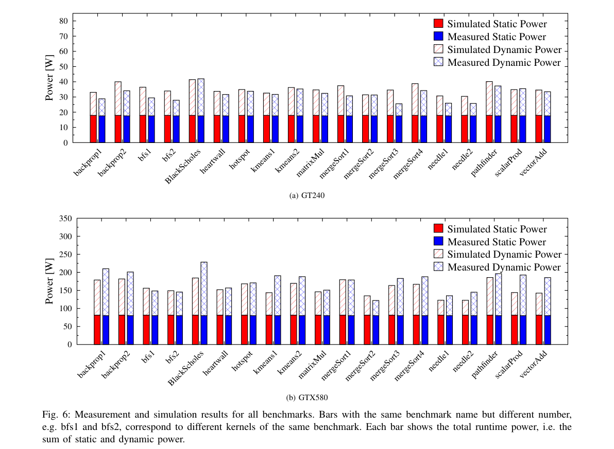

本报告由大模型自动生成，可能存在理解、归纳或数据转述错误；请以原论文为准。 How a single chip causes massive power bills GPUSimPow: A GPGPU power simulatorJan Lucas, Sohan Lal, Michael Andersch, Mauricio Álvarez-Mesa, Ben H. H. Juurlink · IEEE International Symposium on Performance Analysis of Systems and Software (ISPASS) · 2013 · 原文 · PDF 报告模型：gemini-3.1-pro-preview / high 本文介绍了一篇发表于 2013 年 IEEE ISPASS 会议的体系结构论文《How a single chip causes massive power bills: GPUSimPow: a GPGPU power simulator》。该文由柏林工业大学的研究团队撰写。为了帮助理解，本文在叙述时补充了部分体系结构与集成电路相关的通用背景知识（这些补充说明将以明确的方式指出，以区分原文的论述）。 问题的背景与动机在现代计算机体系结构中，图形处理器（GPU）已经成为真正的计算核心。由于其提供了比传统中央处理器（CPU）高出一个数量级的通用计算（GPGPU，即利用图形处理器进行非图形渲染的通用科学和工程计算）性能，越来越多的应用被迁移到 GPU 上。然而，伴随着性能的提升，单个 GPU 芯片的功耗也在急剧增加，甚至有时超过 300 瓦，这意味着 GPU 设计正在迅速逼近所谓的“功耗墙（Power Wall）”。这导致微架构设计空间被扩展出了一个新的维度：除了追求性能，架构师必须在设计早期考虑芯片的能耗。 【背景补充】在芯片设计的早期阶段（即只有设计图纸或高级语言代码，尚未流片制造出物理芯片时），架构师通常依赖“周期精确的模拟器（Cycle-accurate Simulator）”来评估设计。这类软件通过模拟芯片在每一个时钟周期内的内部状态变化，来预测新架构执行某段代码时的性能（如耗时、吞吐量）。 本文面临的核心问题是：在当时，尽管研究人员已经拥有了针对 GPU 性能评估的周期精确模拟器，但却没有能够同时包含功耗评估的模拟工具。对于 CPU，学术界早已存在广为接受的功耗预估框架（如 Wattch 和 McPAT），但没有人将 GPU 的架构模拟器与底层物理功耗模型结合起来。另一方面，之前的少数 GPU 功耗研究要么完全基于对现有单块显卡的纯经验测量（导致模型只能拟合该特定硬件，无法预测参数改变后的新架构），要么纯粹基于解析公式推导（由于缺乏工业界真实的物理参数校准，导致预测的绝对误差极大）。此外，早期研究在测量真实 GPU 功耗时存在严重的方法论缺陷，例如仅仅通过“运行负载时的整机功耗减去空载时的整机功耗”来估算 GPU 功耗，这种方法会受到 PC 电源转换损耗和电源内部大旁路电容的严重干扰，无法准确捕捉执行时间极短（小于 50 毫秒）的计算任务的瞬态功耗变化。 为了填补这一空白，作者提出了 GPUSimPow：一个结合了“解析模型（基于物理方程和几何结构推导）”与“经验模型（基于对真实硅片的精确测量）”的 GPGPU 功耗估算框架，并设计了一套高精度的硬件测量测试台来验证该模拟器。 GPUSimPow 工具的设计与跨层建模方法GPUSimPow 的核心思想是实现架构行为与底层电路物理特性的跨层映射（类似于体系结构与 EDA 早期评估工具之间的协同）。它的工作流程是：接收特定 GPU 架构的配置参数（如核心数量、缓存大小等 XML 文件）以及用 CUDA 或 OpenCL 编写的 GPGPU 内核（Kernel，即在 GPU 上并发执行的独立代码段），最终输出芯片的面积、静态功耗、动态功耗峰值，以及该内核在运行时的实际动态功耗演变。 为了建立这种映射，GPUSimPow 采用了数字集成电路（CMOS）中经典的开关电路功耗解析公式： 这是一个需要自左向右逐项理解的核心公式：
在系统全貌上，GPUSimPow 分为两个主要部分。第一部分是性能模拟器（作者使用了修改版的 GPGPU-Sim），它逐周期运行代码，统计出所有硬件组件的使用情况并生成上述公式中的活动因子 。第二部分是功耗模型（名为 GPGPU-Pow），它是建立在 McPAT 工具基础上的重度修改版。McPAT 本身集成了架构层、电路层和技术层（包含具体的工艺节点物理参数），用于将架构组件映射为基本的电路阵列，从而计算出公式中的 、 和 。通过这两者的结合，架构层的操作（如访存次数、计算指令数）就被转化为了底层的电路功耗代价。在这一跨层映射接口中，传递的量是组件的使用信息和活动因子 。其建模假设和信息损失在于：对于缺乏详细模型的未分化组件（undifferentiated components），性能模拟器无法为它们生成任何活动因子，因此只能将未分化核心的全部功耗归因于静态功耗，这造成了动态活动信息的损失。 GPU 架构的详细建模由于 McPAT 最初是为 CPU 设计的，作者必须对其进行大量修改以匹配 GPU 的特征。作者建模的基准架构是一种单指令多线程（SIMT）架构。在 SIMT 模型中，多个线程被捆绑成一个“线程束（Warp）”，它们在同一个时钟周期内被迫执行相同的指令，但处理不同的数据。 在宏观层面，GPU 芯片包含内存控制器（MC）、片上网络（NoC）、PCIe 控制器以及多个计算核心（Cores），同时还包含芯片外的 GDDR5 图形内存（显存）。在核心内部，作者详细推导了以下组件的物理运作流程及功耗来源：
应对未公开细节的经验性推导对于缓存和控制表这类规则组件，作者可以用内部自带的 CACTI 存储器模型（解析模型）准确计算功耗。但对于执行单元，以及像光栅化操作流水线（ROPs）、固定功能视频解码器等英伟达未公开设计细节的不规则硬件组件，解析推导是无效的。 因此，作者引入了经验模型，这体现了研究中的一种关键设计选择。作者通过编写特定的微基准测试程序（Microbenchmarks），有意控制代码的行为来逆向推导硬件参数：
实验方法与测量平台为了测量上述经验参数，并最终验证模拟器的准确性，作者开发了定制的硬件测量测试台。 测量设备（硬件部分）：作者使用转接卡在显卡和主板 PCIe 插槽之间串接了阻值为 和 的极小采样电阻。由于芯片消耗的电流流经电阻时会产生微小的电压降，系统通过信号调理板将这些微弱的压降放大并平移到 的范围，随后使用国家仪器（NI）的 USB-6210 数据采集卡（DAQ）以 的高频进行采样。这种高频采样彻底解决了过去由于电源电容滤波而无法测量短时内核瞬态功耗的问题。考虑到电阻、放大器和 DAQ 的固有精度误差，整个系统的测量误差被控制在 以内。 测试系统与负载：作者选择了两张真实的显卡：基于老一代 GT200 架构的低端卡 GT240，以及基于较新 Fermi 架构的高端卡 GTX580（具体参数见表 2）。为了进行压力测试，作者从公认的 Rodinia 基准测试套件和 CUDA SDK 中选取了 11 种涵盖不同应用领域的内核程序。对于执行时间过短（少于 500 微秒）的内核，作者在软件层面上将其修改为连续执行 100 次，这是为了适应测量设备的响应时间下限所做出的合理妥协。 评估与结果为了剥离静态功耗和动态功耗，作者再次巧妙利用了物理规律（即前面的总功耗公式中，频率 为 0 时，动态功耗为 0）。在 GT240 上，作者分别在默认频率和降频 20% 的状态下运行同一个程序，然后利用线性外推法，计算出频率为 0 Hz 时的功耗（即芯片的静态功耗）。然而，针对 GTX580，此时英伟达的 Linux 驱动程序在软件规范层面锁定并禁止了调节频率（这属于驱动/协议强制的约束），因此作者只能通过测量空载功耗，并套用 GT240 上发现的比例关系，来“估算”GTX580 的静态功耗。 图 6（图 6a 针对 GT240，图 6b 针对 GTX580）直观展示了本文最重要的实验结果：在运行 11 个不同基准测试时，模拟器预测的总运行功耗（包含静态与动态部分）与测试台测得的真实功耗对比柱状图。 
除了估算整体功耗，GPUSimPow 的另一个核心价值在于功耗分析（Power Profiling），即它能够打破硬件的黑盒，将整机功耗向下细分到每一个微架构组件。原文中的表 5 以
总结与主线串联回顾全文，本文沿着一条清晰的工程破局主线展开：面对由于 GPU 功耗急剧上升带来的微架构设计挑战（问题起因），架构师迫切需要在不制造实际芯片的情况下预测执行特定代码时的芯片功耗，而现有的周期精确性能模拟器由于缺乏底层物理电路模型而无法胜任（现有局限）。为此，作者将记录代码运行活动的架构性能模拟器与包含物理参数的底层电路解析模型（McPAT）嫁接，对于无法解析的未知硬件黑盒，则通过自主设计的高频高精度硬件测试台进行经验性测量并补齐（解决方案）。最终，本文打造出的 GPUSimPow 工具被证明能够在真实硅片（GT240 和 GTX580）上达到约 10% 左右的合理误差，并赋予了研究人员透视芯片内部各个组件吃电多少的“透视眼”（最终成果）。 不过，本文的结论和工具也存在明确的局限性：如表 5 所揭示的，很大一部分（近一半）的核心功耗目前是由经验测量的“未分化晶体管”支撑的。这意味着该模拟器中最关键的假设——“那些未被公开建模的背景结构其功耗在不同应用中相对稳定”——使得工具带有强烈的特定时代芯片的烙印。因此，这些功耗分布的绝对数值结论不能被过度推广到未来发生了彻底架构革新（例如引入了光线追踪核心或新型张量阵列）的 GPU 上，除非研究者使用相同的测试手段对新一代硅片重新提取经验常量补丁。 |